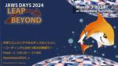
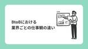
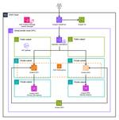
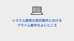
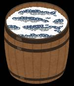
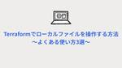

Technology - NRIネットコムBlog
https://tech.nri-net.com/archive/category/Technology
NRIネットコム社員が業務で利用している幅広い技術やナレッジについて紐解くブログメディアです。
フィード
AWSマンスリーアップデートピックアップ！！ 2024年3月分 ～NRIネットコム TECH AND DESIGN STUDY #28～
Technology - NRIネットコムBlog
こんにちは、ブログ運営担当の小野です。 4/8（月）12:00~12:30 当社主催の勉強会「NRIネットコム TECH & DESIGN STUDY #28」が開催されます!! 今回のTECH & DESIGN STUDYのテーマは、日々たくさんのアップデートが発表されているAWSについて、前月分のアップデートより当社の腕利きエンジニア目線で皆さんのお役に立ちそうな情報を厳選ピックアップしてお話させていただきます！ 是非ご参加ください！ 登壇者 西内渓太 2022年NRIネットコム入社のクラウドエンジニア ブログ執筆：https://tech.nri-net.com/archive/auth…
13時間前

【JAWS DAYS 2024】『子育てエンジニアパネルディスカッション』招待講演に登壇しました ～登壇＆資料公開編～
Technology - NRIネットコムBlog
JAWS DAYS 2024『子育てエンジニアパネルディスカッション』#jawsdays2024_c こんにちは、５児のパパになりました丹（たん）です。 2024年3月2日の土曜日に、JAWS DAYS 2024*1が開催されました。JAWS DAYSは、JAWS-UGによる全国規模の交流イベントです。 私は初参加だったのですが、5年ぶりの開催で900人近くが来場したそうです。 JAWS DAYS 2024の招待講演*2である『子育てエンジニアパネルディスカッション～コーディングとおむつ替えの狭間で～』で登壇した話と公開資料について書きたいと思います。 招待講演に登壇するまでの経緯 招待講演の…
13時間前

BtoBにおける業界ごとの仕事観の違い 2
2
Technology - NRIネットコムBlog
本記事は BtoBウィーク 3日目の記事です。 🏢 2日目 ▶▶ 本記事 ▶▶ 4日目 🏢 初めに 皆さんこんにちは。アプリ開発担当の芳賀です。 今回は、BtoBビジネスでのお客様による違いという観点から、IT業界のお仕事の特性を分解してみたいと思います。IT業界への就職を考えている方の企業選びの参考になれば幸いです。 背景 私は2022年の9月に転職でNRIネットコムに入社しました。前職も同じくSIerで、地方自治体・財団法人・行政法人といったいわゆる公的機関に近いお客様に向けたシステム構築が主でした。現在は一般企業向けのシステム構築を担当しています。私は二社を経験して、エンドユーザー様によ…
15時間前

CDKでスケーラブルなWebアプリケーション基盤を作成してみた 2
Technology - NRIネットコムBlog
はじめに Webアプリケーション基盤の構成とCDKスタック 感想 はじめに こんにちは。大林です。 今回のブログでは、CDKで作成したスケーラブルなWebアプリケーション基盤の簡単な説明と作成してみての感想をまとめていきたいと思います。 CDKとは、プログラミング言語を使用してAWSリソースを定義できるツールのことです。CDKは、TypeScript、JavaScript、Java、Python、C#、Goに対応しているため、CloudFormationのYAMLやJSON形式のテンプレートの作成に慣れていない多くの開発者にとっては、使い慣れたプログラミング言語でAWSリソースを構築することが…
2日前

システム開発の受託案件におけるプライム案件のよいところ
Technology - NRIネットコムBlog
本記事は BtoBウィーク 2日目の記事です。 🏢 1日目 ▶▶ 本記事 ▶▶ 3日目 🏢 こんにちは、昨年NRIネットコムにキャリア入社した長辻です。 今回は、 SIer における受託開発の中でも、特にプライム案件のよいと思うところをご紹介してみたいと思います。 就職や転職でプライム案件に携わりたいと考えている方の参考になれば幸いです。 はじめに プライム案件とは プライム案件のよいところ 1. プロジェクトの運営に関する決定権がある 2. ユーザー企業と直接コミュニケーションを取れる可能性が高い 3. プロジェクトの計画や進捗管理を担当できる可能性が高い プライム案件のよくないところ 注意…
2日前
SIerエンジニアが持っておきたいビジネスや顧客に対する姿勢 2
Technology - NRIネットコムBlog
本記事は BtoBウィーク 1日目の記事です。 🏢 告知記事 ▶▶ 本記事 ▶▶ 2日目 🏢 SIerエンジニアが持っておきたいビジネスや顧客に対する姿勢 はじめに 営業もエンジニアも土台は同じ 売上や利益目標、収益構造を知る 顧客企業の情報を集める 初対面で好印象を残す 顧客と対面で会う 顧客と繰り返し会う 顧客と積極的に雑談する 顧客に積極的に提案する まとめ はじめに こんにちは。クラウド事業推進部 マネージャーの松本です。2009年にネットコムに新卒入社しました。 私は幼いころからどちらかというと控えめで、目立つのは好まない方です。下駄箱にチョコが入っていても周りに自慢せず、そっとカバ…
3日前
ブログイベント「BtoBウィーク」開催します！
Technology - NRIネットコムBlog
こんにちは、ブログ運営担当の小嶋です。 今月のブログイベントについてお知らせします！ 3月のブログイベントは「BtoBウィーク」です！ 今回は、ネットコムのおしごと をテーマにした記事を連載していきます。なかなかイメージするのが難しいBtoB業界・SIer（システムインテグレーター）と呼ばれる業種ですが、この業界やネットコムに就職活動等で興味を持っていただいている方々に向けて、少しでも具体的に、そして分かりやすく伝えていければと思います。 記事掲載日と記事内容 更新され次第、こちらの記事にもリンクを掲載します。ぜひ、ご期待ください！ 3/25(月)：松本祐樹 tech.nri-net.com …
3日前

塩漬け、ダメ。ゼッタイ。〜Growi Compose (on EC2)をv3→v6に更新した話〜
Technology - NRIネットコムBlog
はじめに Growiとは なんで塩漬けしてた？ いい加減更新しよう というわけで 既存構成 具体的な戦略 1. コンテナ内データバックアップ busyboxを使ってコンテナ内データをtarで固める 2. MongoDBバージョンアップ コンテナで動いているMongoDBの更新手順 3. ホストOSバージョンを更新する SSH鍵の暗号化形式がデフォルトで ED25519 になる EC2の構成をCDK管理にする まとめ はじめに 最近花粉症がようやく落ち着いてきたozawaです。ようやくこの地獄のスパイラルから抜け出せそうです。 Growiとは WESEEK社が開発しているOSSなWikiツールで…
8日前
新人のCOBOLtoJava体験記
Technology - NRIネットコムBlog
はじめに COBOLtoJavaプロジェクトとは なぜ今COBOLをJavaにする必要があるのか？ マイグレーションの手法 COBOLとJavaの違いで躓いたこと 1. 構造の違い 2. 変数定義の違い 3. 固定長ファイルの入出力処理の違い おわりに はじめに はじめまして、最近は花粉に苦しんでいる入社１年目の德永です。 部署配属されてから半年が過ぎましたが、まだまだ分からないことだらけで悩む毎日です。今回は配属後３ヶ月目辺りで関わらせていただいたCOBOLtoJavaプロジェクトで私が感じたことについてお話したいと思います。 COBOLtoJavaプロジェクトとは システム運用保守の業務改…
9日前

Terraformでローカルファイルを操作する方法 ～よくある使い方3選～ 26
Technology - NRIネットコムBlog
こんにちは、後藤です。 Terraform開発を進める中で「こんなことできるのか」と思った機能があったので、備忘録も兼ねて紹介します。 それはローカルのファイルを操作できる、という機能です。 TerraformではAWSやAzure、GCPなどのパブリッククラウドプロバイダを扱えますが、localやarchiveといったHashiCorp社によるプロバイダがあります。 このプロバイダを使えば、Terraformを実行するローカル環境のファイル操作が可能になります。 当記事では、よく使われるであろう方法を3つ紹介していきます。 ※Terraformバージョン1.5.6で検証しております。 1つ目…
9日前

AWS Certified Data Engineer - Associate(DEA)の学習方法
Technology - NRIネットコムBlog
小西秀和です。 この記事は「AWS認定全冠を維持し続ける理由と全取得までの学習方法・資格の難易度まとめ」で説明した学習方法を「AWS Certified Data Engineer - Associate」に特化した形で紹介するものです。 重複する内容については省略していますので、併せて元記事も御覧ください。 また、現在投稿済の各AWS認定に特化した記事へのリンクを以下に掲載しましたので興味のあるAWS認定があれば読んでみてください。 ALL DevOps Developer SysOps SA Pro SA Associate DE Associate Networking Security…
15日前
ACM で発行した証明書を EC2 (Amazon Linux 2023 + Nginx) で利用する
Technology - NRIネットコムBlog
こんにちは、インフラエンジニアのさかもとです。 通常、ACM で発行したパブリック証明書*1を利用するには EC2 の前段に ELB あるいは CloudFront ディストリビューションを構築しそれらに適用する必要があります。 しかし、AWS Certificate Manager (ACM) for Nitro Enclaves を利用すれば ACM で発行したパブリック/プライベート証明書を EC2 で利用することができます。 docs.aws.amazon.com ACM for Nitro Enclaves は AWS Nitro Enclaves に対応したインスタンスしかサポート…
15日前
Amazon SESのメール受信機能を使って、定型業務を自動化してみた
Technology - NRIネットコムBlog
はじめに 構成 作ってみた Amazon Route53によるドメイン登録 SESのドメイン認証 CloudFormationで作成するリソース Route53によるMXレコードの公開 SES受信ルール作成 メール保存用のS3バケット作成 S3に保存されたメールの内容を取得し、Slackに通知するLambda 転送設定 動作確認 困ったこと どの権限を与えればよいか分からない CloudFormationの構築手順を意識する おわりに はじめに はじめまして、入社1年目の藤本です。8月にクラウド事業推進部に配属され、AWSを用いた業務に日々奮闘しています。 私は、AWSの学習の一環として社内の…
17日前
全文検索サービス「Algolia」の使い方
Technology - NRIネットコムBlog
こんにちは西部です。初めてネットコムブログを記載するということで、課内のプロジェクトにて、学ぶ機会のあった全文検索サービス「Algolia」に関して記事を記載してみようと思います。 Algoriaについて Algoliaは全文検索サービスを簡易にアプリやサイトへ組み込むことができるSaaSのことです。 全文検索とは？ 全文検索とは指定する範囲のすべての文字を検索することです。この全文検索を使って、例えば、サイト上の上部などに検索欄を配置し、入力されたキーワードに関連するコンテンツをリアルタイムで表示させることができます。 Algoliaの特徴 Algoliaの主な特徴としては下記のような特徴が…
20日前
14年目の終わり。AIの力を借りて初心を思い出す。
Technology - NRIネットコムBlog
小林です。 先日3/1にブログを投稿したのですが、たまたま同じ日に大林さんも投稿しており図らずも小林と大林の共演が実現していました。 ということで次は中林さんを募集中です。 さて、今年でAWS認定の有効期限がいろいろ切れてしまうので、6週連続AWS再認定にチャレンジしてきました。 無事に成功しましたが、大変危険なのでよい子はマネしないでください。 ※小林は特殊な訓練を受けています。 このチャレンジのトリをつとめたのはAWS認定 機械学習 - 専門知識（MLS）なのですが、試験の最中に「そういえば全く機械学習サービス使ったことないな…」と気になりはじめてしまいました。 MLSは試験時間に余裕があ…
21日前
『技術書を書く技術』というテーマで、JAWS DAYS 2024に登壇しました
Technology - NRIネットコムBlog
こんにちは、佐々木です。 先週の土曜日（2024年3月2日）に、5年ぶりにJAWS DAYSが開催されました。参加登録者1,000人で当日も900人近くが来場され、非常に活況な勉強会でした。私もその中のセッションの1つで登壇させて頂いたので、登壇資料や補足など記しておきます。 登壇資料 当日の登壇資料はこちらです。 speakerdeck.com 登壇とテーマ決めの経緯 セッションについては、CfX（Call for X）という形式でセッションやワークショップ・パネルディスカッションなどを募集する形式でした。私はセッションの形態で2つ応募して、技術書を書く技術というテーマが採択されました。後で…
22日前
2023年3大クラウド中心のAI総まとめとオンプレtoクラウドマイグレーションをやってみよう～NRIネットコム TECH AND DESIGN STUDY #27～
Technology - NRIネットコムBlog
こんにちは、ブログ運営担当の小嶋です。 3/19（火）19:00~20:00 当社主催の勉強会「NRIネットコム TECH & DESIGN STUDY #27」が開催されます!! 今回のTECH & DESIGN STUDYは、当社クラウドエンジニアから、2023年3大クラウド中心のAI総まとめと、AWS20分クッキング！MGNやDMSを使ってオンプレtoクラウドマイグレーションをやってみよう！についてお話します。 【1本目】2023年3大クラウド中心のAI総まとめ 2022年末にChatGPTが公開され1年以上が経ち、本格的なAIブームとなりました。 この1年間でクラウド分野に関しても各社…
1ヶ月前
SSMって20種類あんねん 〜Run Commandで定期バッチを起動する〜
Technology - NRIネットコムBlog
どうも。小林です。 みなさん、自動化してますか？ 私の課では特定の顧客のシステムを多数運用しています。 かなり多くのシステムがあり、顧客側の担当者も異なるため、弊社側でも複数のチームを組んで手分けしてシステムを担当しています。 チームも顧客担当者も異なるとなれば、当然運用のやり方はシステムごとに変わってきます。その一方で統一できる部分は統一しておかないと全体の統制は効きづらくなってしまいます。 そこで「標準化チーム」を発足し、チーム間で共用するシステムのアカウント管理やその申請ルール、顧客報告やメンバーの勤怠管理といったものの標準化を進めています。 標準化の恩恵のひとつとして、「作業が単純化で…
1ヶ月前
社会人1年目の学び3選
Technology - NRIネットコムBlog
はじめに 1. 日報には意味がある 2.会議では発言する 3.自分も立派なチームの一員 おわりに はじめに 初めまして。 「テキトーと適当を使い分ける」がモットーの社会人1年目SEの渡辺です。 ここで言う「テキトー」は大雑把な行為・姿勢、「適当」は文字通り適切な行動を指しています。 やるべきことはやる、手を抜けるところは手を抜くことでこれまでの人生をすり抜けてきました。 そんな私はたまに「テキトーと適当を使い分ける」の「テキトー」が強めに現れすぎてしまうときがあります。 社会人を1年経験して「テキトー」が独り歩きしミスにつながってしまったこと、そこで指摘され得た学びを紹介します。 これから社会…
1ヶ月前
踏み台サーバー、SSMセッションマネージャー、EC2 Instance Connect Endpoint サービスを使用したEC2インスタンスへの接続方法と特徴を比較してみた
Technology - NRIネットコムBlog
はじめに 踏み台サーバー経由で接続する方法 ①セキュリティグループを作成する ②パブリックサブネットに踏み台サーバを作成する ③プライベートサブネットにEC2インスタンスを作成する ④踏み台サーバーにプライベートサブネットに配置されたEC2インスタンスのキーペアをコピーする ⑤踏み台サーバーにアクセスする ⑥踏み台サーバーからプライベートサブネットにあるEC2インスタンスにアクセスする SSMセッションマネージャー経由で接続する方法 VPCエンドポイントを使用した方法 ①セキュリティグループとIAMロールを作成する ②プライベートサブネットにEC2インスタンスを作成する ③VPCエンドポイント…
1ヶ月前
資格に対する勉強のやる気 ～作業興奮と兼好法師～
Technology - NRIネットコムBlog
こんにちは、後藤です。普段、私はAWSを使ったシステムの設計や開発をしております。 先日、AWS認定資格をすべて取得できたので振り返りたいと思います。各試験の難易度や出題内容といった話ではなく、どのように勉強し続けたのかについて書いていきます。 エンジニアの方だけでなく「勉強しないといけないけど、やる気が起きない」と思っている方にも是非読んでいて頂けたら幸いです。 はじめに 私はエンジニアになる前は営業職として働いていました。 今となっては体系的な知識を効率的に抑えることができるので資格取得の意義を感じていますが、エンジニアになりたての頃はそうでもありませんでした。 案件に入るために取らなけれ…
1ヶ月前
AWSマンスリーアップデートピックアップ！！ 2024年2月分 ～NRIネットコム TECH AND DESIGN STUDY #26～
Technology - NRIネットコムBlog
こんにちは、ブログ運営担当の小野です。 3/12（火）12:00~12:30 当社主催の勉強会「NRIネットコム TECH & DESIGN STUDY #26」が開催されます!! 今回のTECH & DESIGN STUDYのテーマは、日々たくさんのアップデートが発表されているAWSについて、前月分のアップデートより当社の腕利きエンジニア目線で皆さんのお役に立ちそうな情報を厳選ピックアップしてお話させていただきます！ 現在、鋭意準備中ですが、トピックの一部として、下記をご紹介する予定です！ ・AWS CloudFormationで既存リソースのコード化が可能に ・Amazon EC2の無料利…
1ヶ月前
「AWS Organizationsを利用したマルチアカウント管理のベストプラクティス」のWebinarを開催します
Technology - NRIネットコムBlog
こんにちは、佐々木です。ブログでの告知を忘れていたので、直前ですが宣伝です。 今週木曜日の2024年2月29日 12時に、NRIネットコムが主催のAWS Organizationsを利用したマルチアカウント管理のWebinarを開催します。そこで佐々木が登壇するので、ご案内です。 Webinarで話そうと思っていること 今回のWebinarのテーマは、マルチアカウント管理のベストプラクティスです。そして、タイトルには「AWS Organizationsを利用した」と付けています。当たり前のようですが、AWSで複数のアカウントを管理するのにはAWS Organizationsが必須といってよいで…
1ヶ月前
localstackを利用して、ローカル環境でJavaからDynamoDBとS3へアクセスしてみる
Technology - NRIネットコムBlog
はじめに localstackとは 環境準備 dockerコンテナ作成 AWS クレデンシャル設定 AWS SDK for javaを利用して、AWSリソースへアクセスする DynamoDBへアクセスしてみる S3へアクセスしてみる おわりに はじめに はじめまして、入社1年目の川野です。 主に、AWSを利用したアプリケーション開発や運用の業務をおこなってます。 開発では、localstackを使ってローカルで検証しよう！とアドバイスをもらったものの、よく分からず・・・・ 先輩方に設定や環境構築など教えて頂きどうにか乗り越えることができましたが、疑問点も多かったので、 今回はlocalstac…
1ヶ月前
AWS CloudFormationのIaCジェネレータを試してみる
Technology - NRIネットコムBlog
こんにちは、西内です。 先日、AWSから以下のようなアップデートが発表されました。 AWS CloudFormation は、CloudFormation の外部で管理されている既存の AWS リソース用の AWS CloudFormation テンプレートと AWS CDK アプリを簡単に生成できる新機能をリリースしました。生成されたテンプレートとアプリを使用して、CloudFormation と CDK にリソースをインポートしたり、新しい AWS リージョンまたはアカウントにリソースを複製したりすることができます ※下記サイト「既存の AWS リソース用の AWS CloudFormat…
1ヶ月前
必見！IT知識がない新人でも質問を上手にする方法
Technology - NRIネットコムBlog
全くJavaを触ったことがない新人がタスク完了のため、質問するときに意識したことを紹介します！
1ヶ月前
AWS Configを有効化しても、アグリゲータには検出結果しか表示されない話
Technology - NRIネットコムBlog
こんにちは、西内です。 今回はAWS Configの細かい話をしようと思います。 Configの有効化を行った際に想定と違うことが起きて焦ったことがあったので、同じ現象に遭った方の一助になれば幸いです。 今回想定するアーキテクチャ Configアグリゲータとは アグリゲータに結果が表示されない？！ アグリゲータには検出結果しか表示されない さいごに 今回想定するアーキテクチャ まず、今回の記事の前提とするアーキテクチャを図示します。 以下のようなアーキテクチャでConfigを有効化していることとします。 図中の「Config委任アカウント」をConfigルールの委任管理者として、メンバーアカウ…
1ヶ月前
Amazon Linux 2023 を VirtualBox 上で起動する
Technology - NRIネットコムBlog
こんにちは、インフラエンジニアのさかもとです。 少し古い情報になりますが、2023年12月に Amazon Linux 2023 の仮想マシンイメージが利用可能となりました。 aws.amazon.com ただ 2024年2月時点でサポートされている仮想プラットフォームは KVM および VMware のみのため、手軽にローカルで Amazon Linux 2023 を試してみることができません。 そこで今回は VMware 用のイメージを利用し、VirtualBox 上で Amazon Linux 2023 を起動させる方法を紹介します。 0. 環境 1. Amazon Linux 2023…
1ヶ月前
ECSの機能とオプションについてと独自データを扱える生成AIサービス(RAG)の作り方～NRIネットコム TECH AND DESIGN STUDY #25～
Technology - NRIネットコムBlog
こんにちは、ブログ運営担当の小野です。 3/5（火）19:00~20:00 当社主催の勉強会「NRIネットコム TECH & DESIGN STUDY #25」が開催されます!! 今回のTECH & DESIGN STUDYは、当社クラウドエンジニアから、コンソールで学ぶ！ECSの機能とオプションについてと、AWSサービスだけを使って独自データを扱える生成AIサービス(RAG)の作り方について紹介します。 【1本目】 コンソールで学ぶ！ECSの機能とオプション AWSでコンテナといえばECSですが、構築・運用していく上で使える機能やオプションはたくさんあります。 久しぶりにAWSコンソール上で…
1ヶ月前
Step Functions で自動化!!! CloudFront Continuous Deployment
Technology - NRIネットコムBlog
いつの間にか 1 月が終わってもう 2 月半ばですね、今年もあっという間に終わりそうな気がしています。西です。 昨年は CloudFront Continuous Deployment (CloudFront CD) について何度かご紹介しましたが、2024 年最初の記事も CloudFront CD についてです。 これまでの記事では概要や操作方法を紹介する色が強い記事でしたが、今回の記事では実際のデプロイに寄った点について考えてみます。 実際のデプロイでは必要な API 実行の自動化に加えて「動作確認 / テストを実行するフェイズを組み込みたい」のようなニーズがあるかと思います。 こうした…
1ヶ月前